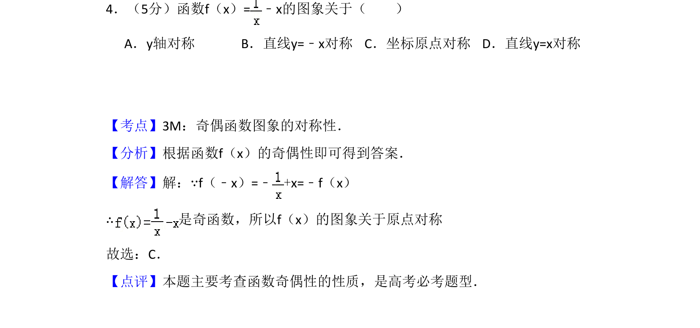
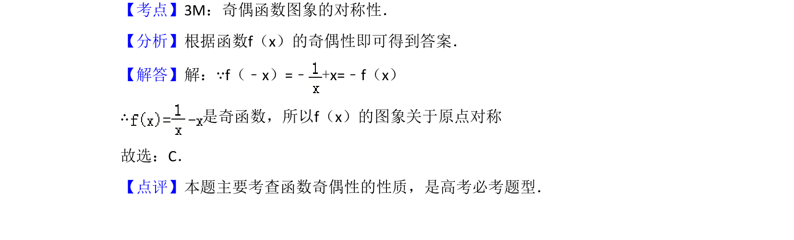

考点：奇函数性质 图象对称性 函数奇偶性

判断函数f(x)=1/x-x的奇偶性，利用f(-x)=-f(x)得出图象关于原点对称。

📄 原 PDF 第 2 页：
素材/真题/吉林/2008-2024·（吉林）数学高考真题/2008年高考数学试卷（文）（全国卷Ⅱ）（解析卷）.pdf
4．（5分）函数f（x）=﹣x的图象关于（ ） A．y轴对称B．直线y=﹣x对称C．坐标原点对称D．直线y=x对称
【考点】3M：奇偶函数图象的对称性．菁优网版权所有 【分析】根据函数f（x）的奇偶性即可得到答案． 【解答】解：∵f（﹣x）=﹣+x=﹣f（x） ∴是奇函数，所以f（x）的图象关于原点对称 故选：C． 【点评】本题主要考查函数奇偶性的性质，是高考必考题型．